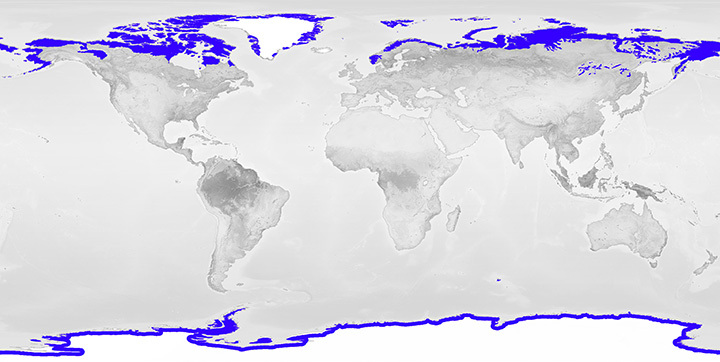

## **Where is the Tundra Found?**
- The tundra is a cold, treeless biome that is primarily found in regions with low temperatures, short growing seasons, and little precipitation.
- It is mainly located in the northernmost parts of the world, specifically in the Arctic and Alpine regions.
- The **Arctic Tundra** is located around the **North Pole**, stretching across parts of **North America**, **Europe**, and **Asia**, including countries like Canada, Alaska (USA), Greenland, Russia, and parts of Scandinavia.
- The **Alpine Tundra** is found at high altitudes on mountain ranges worldwide, even near the equator, such as in the **Rocky Mountains** in North America, the **Andes** in South America, the **Himalayas** in Asia, and the **Alps** in Europe.
- The **Arctic Tundra** covers vast areas, including the **Siberian Tundra** in Russia and the **Canadian Tundra**, with temperatures that can drop to as low as -50°C (-58°F) in winter.
- The **Alpine Tundra** is not tied to any specific continent and occurs in regions where the elevation is high enough to produce tundra-like conditions, regardless of latitude.
- The tundra is found in areas with permafrost—permanently frozen ground—underneath the soil, which prevents most plant life from growing deeper roots.
